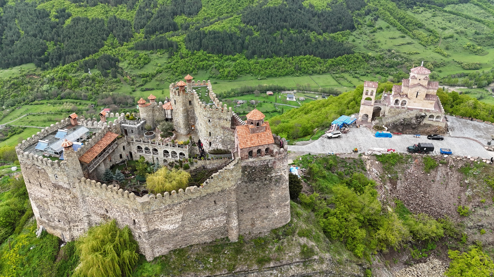
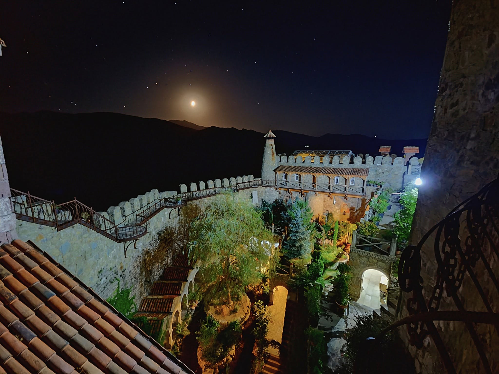
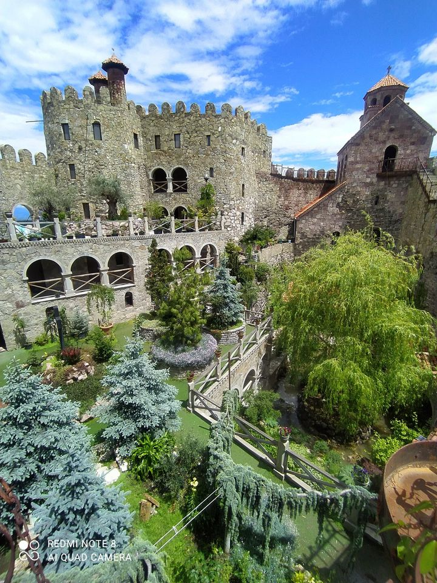
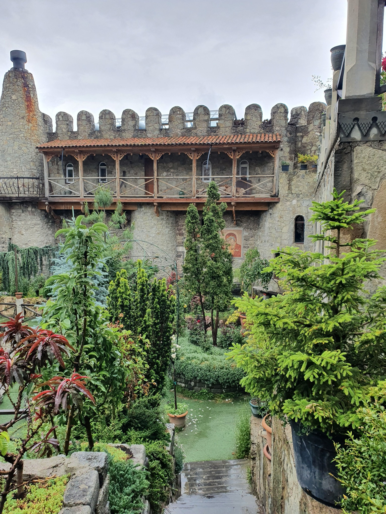
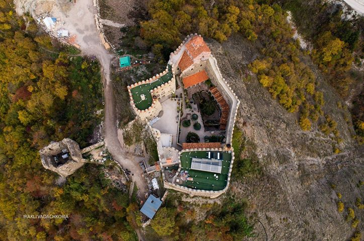
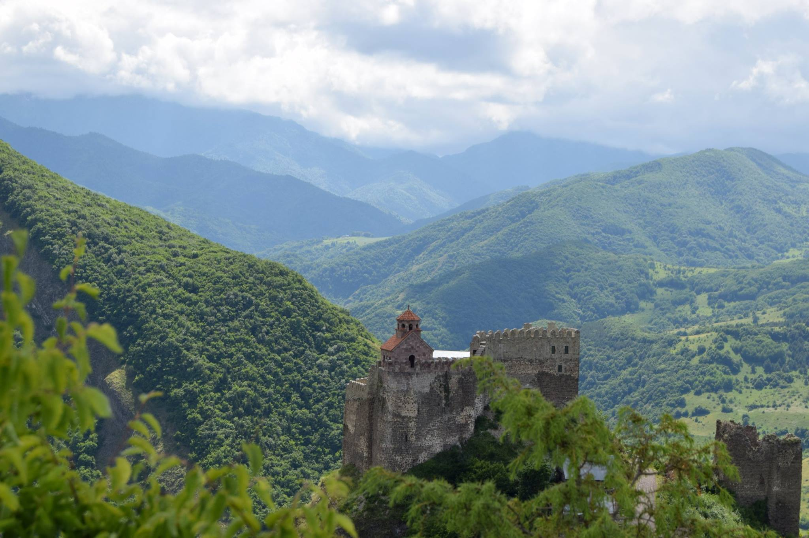

მძოვრეთი - ძამას ხეობის ციხე-ქალაქი და სამონასტრო სავანე
მძოვრეთი (ან მზოვრეთი) შიდა ქართლის ერთ-ერთი უმნიშვნელოვანესი ისტორიული ძეგლია. იგი მდებარეობს ქარელის მუნიციპალიტეტში, სოფელ ორთუბანთან, მდინარე ძამას მარჯვენა ნაპირზე, მაღალ და მიუვალ კლდეზე.
ისტორიული წარსული
სახელწოდება: სიტყვა „მძოვრეთი“ (ან ზოვრეთი) წარმოდგება „საზუერედან“, რაც ძველ ქართულად "საბაჟოს" ნიშნავდა. ხეობაზე გადიოდა სტრატეგიული გზა, რომელიც ქართლს სამხრეთ საქართველოსთან და ბიზანტიასთან აკავშირებდა.
ადრეული ხანა: ისტორიულ წყაროებში მძოვრეთი პირველად X საუკუნეში იხსენიება, როგორც ძამელი მთავრის, ადარნასეს რეზიდენცია.
ფეოდალური ცენტრი: XIV-XVII საუკუნეებში მძოვრეთი შიდა ქართლის უძლიერესი ფეოდალების — "ფანასკერტელ-ციციშვილების" პოლიტიკური და ეკონომიკური ცენტრი გახდა. სწორედ აქ იყო მათი საგვარეულო რეზიდენცია და ციხე-დარბაზი.
არქიტექტურული კომპლექსი
კომპლექსი რამდენიმე მნიშვნელოვან ნაგებობას აერთიანებს:
1. ციხე-დარბაზი და კოშკი: XVII საუკუნის შვიდსართულიანი სათავდაცვო კოშკი, რომელიც დღემდე შთამბეჭდავად გამოიყურება.
2. ეკლესიები კომპლექსის ტერიტორიაზე რამდენიმე ტაძარია, მათ შორის XVII საუკუნის დარბაზული ეკლესია.
3. სასახლის ნანგრევები: ციციშვილთა საგვარეულო სასახლის ნაშთები, რომელიც ოდესღაც ხეობის სიძლიერის სიმბოლო იყო.
თანამედროვე - "მონაზონთა ქალაქი"
XIX საუკუნიდან ქალაქმა დაქვეითება დაიწყო, თუმცა 2008 წლიდან აქ ახალი ეტაპი დაიწყო. მეუფე იობის ლოცვა-კურთხევით მძოვრეთში დაარსდა ასურელ მამათა სახელობის მამათა მონასტერი. დღეს კომპლექსი სრულად აღდგენილია, მოწყობილია ულამაზესი ბაღები და მოქმედებს რამდენიმე ტაძარი.
რატომ უნდა ეწვიოთ მძოვრეთს.?
მძვრეთი არა მხოლოდ რელიგიური და ისტორიული ადგილია, არამედ საუკეთესო ლოკაციაა მათთვის, ვისაც უყვარს ბუნება, პანორამული ხედები და სურს გაეცნოს ძამას ხეობის "მონასტერთა სამყაროს".





